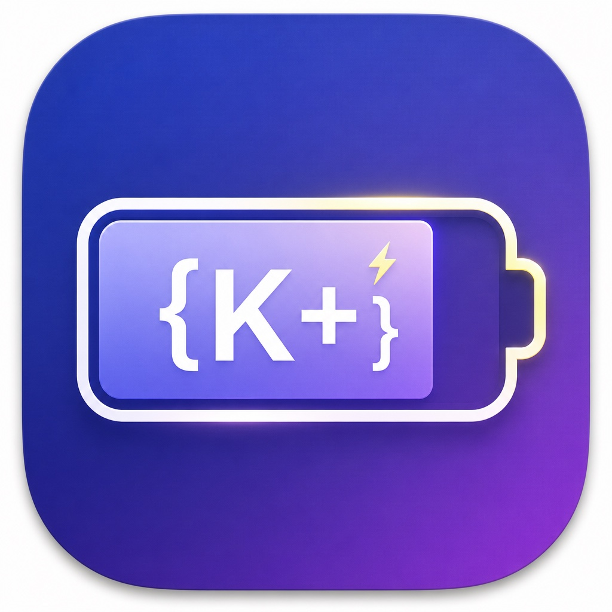

20% / 80% アラート
20% / 80% alerts
下限で「充電を」、充電中の上限で「外すタイミング」を通知（しきい値は変更可）。
Low-battery and “consider unplugging” alerts while charging. Thresholds are customizable.
K-Tech PowerGuard は macOS メニューバー常駐アプリ。20% / 80% のしきい値通知、MacBook Neo 4色テーマ、ガラス効果5段、充電履歴と残量推移まで。すべての Mac で無料利用できます。
K-Tech PowerGuard lives in your menu bar—20% / 80% battery alerts, MacBook Neo 4-color themes, 5-level glass UI, charging history and 24h charts. Free for every Mac.

タブ式設定 · 一般 / 履歴 / 表示 — 13インチでも見やすい UI Tabbed Settings — General / History / Appearance, compact for 13-inch screens
バッテリー寿命を意識した充電習慣を、通知と履歴でサポート。
Support healthier charging habits with alerts and history—not hardware control.
下限で「充電を」、充電中の上限で「外すタイミング」を通知（しきい値は変更可）。
Low-battery and “consider unplugging” alerts while charging. Thresholds are customizable.
Silver · Blush · Citrus · Indigo をワンタップ。カスタムアクセント色も。
One-tap Silver, Blush, Citrus, Indigo—plus custom accent colors.
オフ / 弱 / 中 / 強 / 最大。Neo カラーと組み合わせ可能。
Off, Light, Medium, Strong, Max—pairs with Neo presets.
充電セッション、今日の駆動/充電時間、直近24時間の残量推移。
Charging sessions, daily on-battery time, and a 24-hour level chart.
Air / Pro / Neo / mini / iMac。設定に Mac モデル・チップを自動表示。
Air, Pro, Neo, mini, iMac—your model and chip shown in Settings.
表示言語を設定から切替。ログイン時起動も ON/OFF 可能。
Switch UI language in Settings. Optional launch at login.
DMG を開き、K-Tech PowerGuard を Applications フォルダへ。
Open the DMG and drag K-Tech PowerGuard to Applications.
右クリック →「開く」。システム設定 → 通知で PowerGuard を許可。
Right-click → Open. Allow notifications in System Settings.